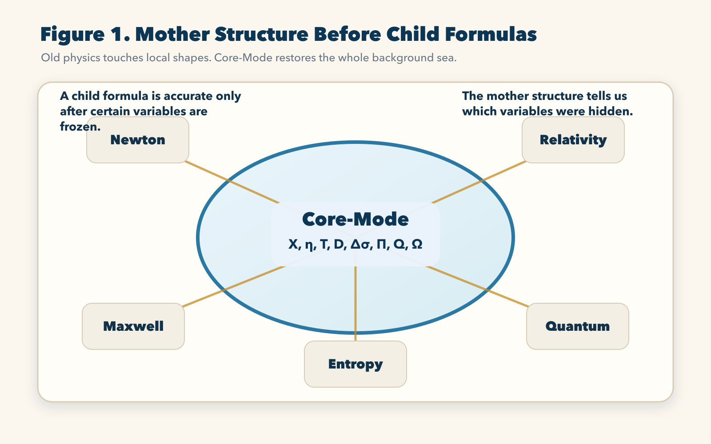
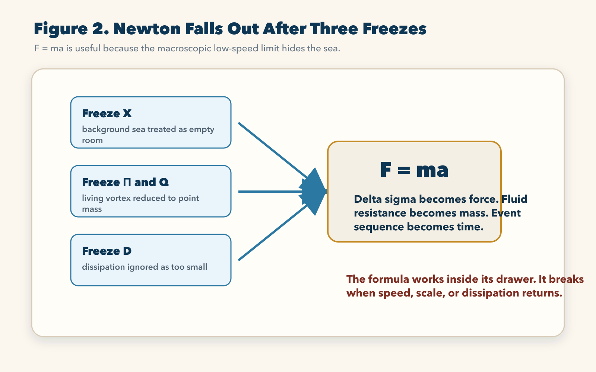
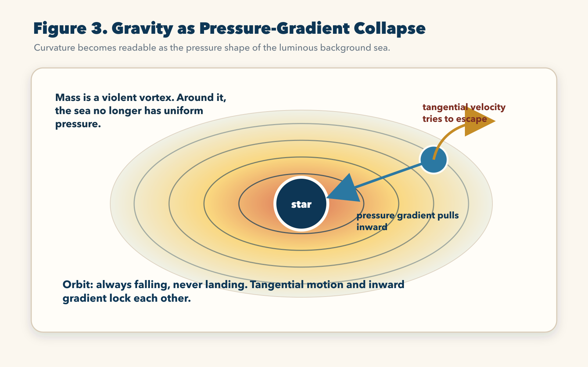
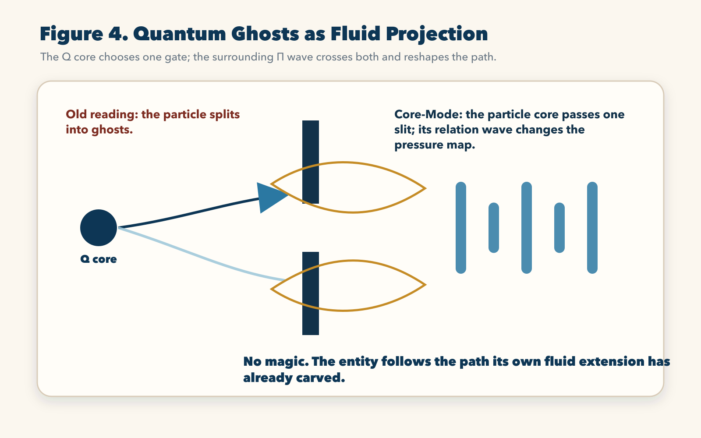
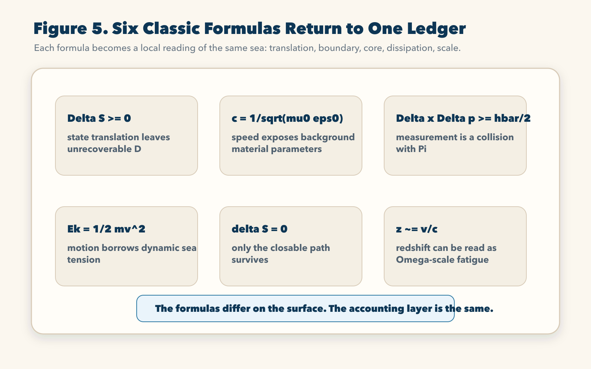

Chapter 6 | Dimensional Strike: Why Old Physics Can Only Be Child Formulas
Physics built its temples from magnificent fragments.
Newton saw the falling apple and gave humanity the law of force. Maxwell saw electricity and magnetism clasp hands and gave humanity the electromagnetic field. Einstein saw that gravity was not a rope and gave humanity curved space-time. Schrödinger saw the microscopic world refuse the shape of ordinary objects and gave humanity the wave function. Boltzmann saw order leak into disorder and gave humanity entropy.
Each of them touched something real.
But touching something real is not the same as seeing the whole animal.
Old physics is a grand scene of blind men touching an elephant. One touched the leg and called the universe force. One touched the belly and called the universe geometry. One touched the ear and called the universe probability. One touched the breath and called the universe field. One touched the dust rising from the skin and called the universe entropy.
They were not wrong in their own local zones. This must be said clearly. Newton works. Maxwell works. Relativity works. Quantum mechanics works. Thermodynamics works. They work with frightening precision inside the boundaries where they were born. A bridge can be built with Newton. A radio can be built with Maxwell. GPS needs relativity. Semiconductors need quantum mechanics. Engines need thermodynamics.
The scandal begins when these child formulas are asked to explain the whole cosmos.
Put them together, and the temple cracks. Relativity gives a smooth geometry. Quantum mechanics gives violent microscopic discontinuity. Thermodynamics points toward irreversible dissipation. Classical mechanics dreams of reversible trajectories. Gravity bends the large-scale world, while quantum fields boil in the small-scale world. At the black hole singularity, the formulas no longer bow to one another. They tear one another apart.
Why?
Because old physics tried to build child formulas without first recognizing the mother structure.
It treated the universe as an empty room and then measured what moved inside that room. It treated entities as objects and then calculated how objects interacted. It treated time as an external river and then used that river as a universal accounting line. It treated probability as the deepest answer when the background dimensions were missing from the instrument.
Core-Mode reverses the order.
The universe is not an empty room. It is a luminous background sea, an X topology with tension, transmission, scale, disturbance, dissipation, relation cavities, Q cores, and observer-dependent Ω cuts. What old physics calls formulas are not ultimate laws floating in abstraction. They are local readings that appear when the full mother structure is viewed through a narrowed window.
In this chapter, we will not politely decorate the old temple. We will open it from underneath.
The question is not whether old formulas are useful. They are useful.
The question is: what did each formula hide in order to become simple?
Once that question is asked, the throne changes hands.

1. Keyhole Physics and the Disaster of Local Genius
The deepest weakness of old physics is not lack of intelligence. It is local genius without a full background.
Newton did not see a luminous sea. He saw bodies. He saw motion. He saw acceleration. He saw force. His genius was to freeze the invisible background so completely that the visible world could be calculated. That freezing was not foolish. It was powerful. A frozen variable can create a usable equation. It can also hide the truth.
Maxwell did something more dangerous. He wrote equations in which light speed came out of the relation between electromagnetic constants. He came closer than almost anyone to exposing the physical properties of the background. But the old language called those properties “vacuum permittivity” and “vacuum permeability,” then stopped. It named the fingerprints of a medium while still insisting there was no medium.
Einstein went further. He felt that Newton’s empty space could not be right. He tied matter, time, and geometry together. He let the stage bend. He destroyed the old absolute room. But he still did not give that curved stage a physical material. Space-time became an astonishing mathematical manifold, not a fluid body with pressure, rigidity, and transmission.
Quantum mechanics then arrived like a ghost story. If the background sea is not recognized, the microscopic relation field of an entity cannot be seen. The instrument sees only statistical traces. It calls the entity a probability cloud. It calls the wave function a mathematical amplitude. It calls entanglement spooky. It calls measurement collapse. It turns missing dimensions into metaphysics.
This is keyhole physics.
A keyhole can reveal real shapes. It can even reveal them with precision. But a keyhole cannot tell you the room. If the room contains a moving ocean, and you see only the white flash passing through the hole, you may write an equation for the flash. You may predict the next flash with excellent accuracy. But you still have not understood the sea.
Core-Mode does not throw away the flashes. It restores the sea that generates them.
This is why the term “child formula” matters. A child formula is not an insult. It is a formula that has been born from a larger body after certain variables have been hidden, frozen, flattened, or ignored. It is a local special case.
The mother structure is different.
The mother structure is not a numerical shortcut. It is not a formula into which you insert values to calculate the fall time of an apple. It is the geometric constitution of reality. It tells us what must exist before an event can appear: X topology, disturbance η, event translation T, dissipation D, potential difference Δσ, relation cavity Π, Q core, and observer scale Ω.
These are not decorations. They are the accounting categories of existence.
X says there is a background topology, not nothing.
η says every disturbance has shape, quality, and possible contamination.
T says reality is state translation, not motion in an empty room.
D says every failed closure has a cost.
Δσ says movement is driven by potential difference.
Π says entities need relation cavities to exist and transmit state.
Q says continuity requires a core that can survive disturbance.
Ω says observation is scale-bound, and a reading at one scale can lose the variables active at another.
Old formulas become child formulas when they take this full structure and close some variables for convenience. The result may be beautiful. It may be precise. It may be powerful. But it remains local.
The sea comes first.
The island comes later.
2. Newton’s Fall: How F = ma Is Born from Frozen Variables
Let us begin with the first great throne: Newtonian mechanics.
The formula is clean:
F = ma
Force equals mass times acceleration. It is so familiar that most people no longer feel its violence. The formula appears obvious because our everyday scale agrees with it. Push a cart harder, it accelerates more. Make the cart heavier, the same push accelerates it less. For building houses, throwing stones, moving machines, designing roads, and launching ordinary projectiles, this formula is a miracle of usefulness.
But Core-Mode asks what had to be hidden in order for this formula to look so simple.
Newton performed three great freezes.
First, he froze X topology. Space became an empty stage. The background sea disappeared. The object moved through nothing. No fluid tension, no underlying grid, no background pressure, no state-carrying medium. Once X is frozen, the world looks like bodies moving in a room.
Second, he froze Π and Q. The entity stopped being a vortex with an internal relation cavity and a continuity core. It became a point mass. This is a stunning compression. A stone, planet, cannonball, animal body, and machine part all become mathematical points with mass attached. Their inner structure is silenced so motion can be calculated.
Third, he froze D. Dissipation became negligible. Friction, heat, turbulence, boundary loss, medium contact, and failed state translation were removed from the clean equation. The world became ideal enough for a simple law.
After these freezes, Core-Mode collapses into the Newtonian child formula.
Δσ, the potential difference that drives state change through the background sea, is reduced to force. The geometric resistance of a vortex moving inside X topology is reduced to mass. Event sequence T is reduced to an external time variable, and acceleration becomes change in velocity across that simplified time line.
Then F = ma appears.
It is not false. It is reduced.
This is the key distinction. A child formula can be valid inside the drawer that produced it. F = ma is valid when the Ω scale is macroscopic, when speed is low, when background effects are small enough to ignore, when the internal relation cavity of the object does not matter, and when dissipation can be treated as a side correction.
That drawer is enormous for ordinary life. This is why Newton still stands in daily engineering.
But when speed approaches the speed of light, when the object becomes microscopic, when energy density becomes extreme, or when dissipation and field structure can no longer be ignored, the frozen variables return like unpaid debt. The formula begins to fail not because Newton was stupid, but because the hidden mother structure is knocking through the wall.
This is why Core-Mode does not need to insult Newton. It dethrones him by giving him a proper place.
Newton is not the king of the universe.
Newton is the local minister of the macroscopic low-speed, low-dissipation drawer.

3. Einstein’s Glory and the Unanswered Question
After Newton, the next throne belongs to Einstein.
Einstein’s greatness lies in the fact that he felt the empty room was wrong. He saw that space and time could not remain untouched while matter and energy moved inside them. He replaced the rigid stage with geometry. In 1915, general relativity gave the world one of the most beautiful equations ever written:
Rμν - 1/2 gμν R + Λgμν = (8πG / c^4) Tμν
The left side describes geometry and curvature. The right side describes energy and momentum. The formula says that mass-energy and space-time geometry are not separate. Matter tells space-time how to curve; curved space-time tells matter how to move.
This was a magnificent blow against Newton’s empty room.
But Core-Mode asks the childlike question that old physics never answered with physical depth:
Why can mass curve space-time?
What is space-time made of, such that it can be curved?
If space-time is not nothing, what is its material character? If it is nothing, why can it bend, transmit, respond, and guide motion? If it is only a mathematical manifold, why should matter have any physical grip on it?
Einstein described the shape of the event with unmatched brilliance. He did not expose the material of the stage. He drew the trampoline’s curvature, but he never opened the trampoline to show its fabric.
Core-Mode supplies the missing layer.
Gravity is not a mystical bending of empty space. Gravity is the pressure-gradient collapse of the luminous background sea.
Consider a star. In the old image, the star is a mass placed in space. In Core-Mode, the star is a colossal nested vortex cavity. Its internal Q core burns, rotates, compresses, radiates, and locks enormous energy into a relation structure. Around this vortex, the X topology is not unchanged. The background sea is dragged, tightened, stressed, and redistributed.
The region near the star does not have the same pressure condition as the distant region. The star creates a pressure funnel in the luminous sea. Far away, the background sea has a calmer tension state. Near the star, the topology is pulled into a steep gradient. A smaller vortex, such as a planet, finds itself on the slope of this pressure field.
The planet is not being pulled by an invisible rope. It is sliding along the pressure shape of the sea.
Einstein’s curvature tensor is therefore a geometric reading of the pressure distribution of X topology. The energy-momentum tensor is a reading of vortex energy and relation-cavity density. The equal sign between them is not magic. It is the statement that a violent vortex changes the surrounding sea, and that the changed sea redirects other vortices.
The old language says: space-time curves.
Core-Mode says: the background sea changes pressure.
This is not a decorative translation. It answers the question Einstein left physically open. It gives geometry a body. It says that curvature is not the action of nothing. It is the macroscopic mathematical trace of a deeper fluid topology.
The difference is decisive.
If space-time is only smooth geometry, then when the formula is pushed into extreme compression, it produces a singularity: zero volume, infinite density, infinite curvature. Old physics then stares into the abyss and calls the infinity profound.
Core-Mode rejects the abyss.
An entity cannot be compressed into a volume smaller than the topology that constitutes it. If matter is a knot in X topology, then it cannot be squeezed beneath the minimum scale of the topology itself. A Lego castle cannot be compressed into something smaller than a single Lego brick while still being a Lego structure.
This is why the black hole singularity is not a physical object. It is the bankruptcy of a child formula pushed beyond its drawer.
A black hole, in Core-Mode, is not an infinite point. It is a super topological dead knot: a region where mass, rotation resistance, and relation-cavity compression have reached the rigidity limit of the luminous background sea. Its inner core is not zero. It is an ultimate Q-core storm compressed to the maximum geometric density the sea can bear.
The event horizon is not the edge of a magical hole in nothing. It is the macroscopic Π boundary of this extreme entity. Around that boundary, the inward Δσ of the pressure funnel is so steep that even light, the fastest one-dimensional disturbance of the background sea, cannot climb back out.
When old relativity calculates infinity at the center, it is not seeing reality. It is seeing the moment its smooth-manifold assumption breaks.
The sea has a bottom.
The grid has a limit.

4. Orbit as Geometric Deadlock
If gravity is a pressure-gradient funnel, one question must be answered immediately.
Why does Earth not fall into the Sun?
If the Sun creates a pressure collapse and Earth sits on its slope, why has Earth not spiraled down into destruction over billions of years? What holds the orbit open?
The answer is geometric deadlock.
Earth is not a marble placed motionless at the edge of a funnel. It carries tangential velocity. In the early formation of the solar system, the material that became Earth gained sideways motion through the rotating accretion field. Today Earth moves around the Sun at roughly thirty kilometers per second.
Two tendencies collide.
The inward Δσ funnel created by the Sun forces Earth to fall inward.
Earth’s tangential inertia tries to fly outward along a sideways path.
At the orbital radius, these two tendencies lock. Earth is falling toward the Sun every moment, but its sideways motion carries it forward so quickly that the fall continually misses. The curve of falling and the curve of escape match. Orbit is not rest. Orbit is perpetual falling without landing.
This is already clear enough for ordinary mechanics. But Core-Mode goes one layer deeper, because our model has a dense background sea. If Earth moves through the luminous sea, why does it not lose energy to fluid friction? In an ordinary fluid, any body moving at high speed should create drag. Over billions of years, that drag should slow the planet until it falls inward.
The answer is the superconducting symmetry of X topology in uniform motion.
As a moving vortex advances, it compresses the background topology in front of it. If the story ended there, we would have friction. But the X topology is not mud. It has extreme elasticity and self-restoring symmetry. The compressed front field rebounds behind the moving entity with a matching release. What the front takes as resistance, the rear returns as push.
Front resistance and rear thrust cancel inside the event tick.
This is why dissipation D can be sealed in clean uniform motion. D has not been denied. It has been locked by symmetry. When the body accelerates, decelerates, collides with another discrete vortex, or disturbs the background asymmetrically, the seal breaks and D wakes. But in a pure stable orbital relation, the forward compression and rear recovery of the sea can close the accounting loop.
This is the lower layer beneath inertia.
Old physics says an object in motion stays in motion unless acted upon by a force. Core-Mode says: stable motion persists because the background topology restores the front-rear pressure accounting symmetrically. Inertia is not motion through nothing. It is motion whose sea-account closes without net dissipation.
This sentence is the key:
The orbit is stable because the entity is not fighting an empty room. It is riding a pressure topology whose inward fall and sideways escape remain locked, while the background sea returns its uniform-motion cost through symmetric recovery.
This is why the old formulas could calculate the orbit but could not explain the material reason for the orbit’s persistence. They had the child equation. They lacked the sea.
5. Quantum Ghosts: The Wave Function as Fluid Extension
Now we turn the engine toward the most haunted chamber of old physics: quantum mechanics.
The microscopic world terrified classical intuition. An electron did not behave like a tiny ball. A single particle seemed to pass through two slits and interfere with itself. A quantum system seemed to exist in a superposition before measurement. Entangled particles seemed to answer each other across impossible distances. Schrödinger’s cat became both dead and alive in popular imagination. The Copenhagen school turned these phenomena into a reign of probability.
Core-Mode gives a different verdict:
There are no random ghosts dancing in the code.
The randomness of the microscopic world is a projection illusion caused by a missing background dimension and a wrong Ω scale.
An electron is not an isolated bead. It is a microscopic vortex in the luminous background sea. Because it is a vortex, it cannot exist without affecting the topology around it. It carries a Q core, but it also carries a surrounding relation field, a Π extension, a dynamic layer of geometric ripples η.
Old instruments cannot directly see the luminous sea. They detect outcomes at the level their Ω scale permits. They see impact marks, energy jumps, interference patterns, and statistical distributions. Then they fit these traces with a mathematical object called the wave function Ψ.
Core-Mode says the wave function is not pure probability. It is the visible mathematical shadow of a real geometric ripple around the microscopic vortex.
This immediately changes the double-slit experiment.
In the old reading, the electron appears to go through both slits. If we fire electrons one at a time, an interference pattern still appears. The old mind says the particle must interfere with itself. The event becomes mystical.
Core-Mode separates the entity into layers.
The Q core of the electron is extremely small. It passes through one slit. It does not split into two little ghosts. It does not become two particles. It remains a core.
But the surrounding Π field and the geometric ripple η spread wider than the core. That field can encounter both slits. It can pass through both openings as a fluid extension. After passing through the slits, the two wave portions interfere in the background sea, reshaping the pressure distribution behind the barrier.
Then the Q core, after passing through one slit, travels into a region already modified by its own relation field. It follows the lower-resistance path carved by that field. Repeated many times, many Q cores land according to the pressure map, forming an interference pattern.
The particle never split.
Its cavity opened the path.

Quantum entanglement can also be read through this deeper background.
When a mother vortex splits into two child vortices, they may appear separated in ordinary space. But at the deeper X-topology layer, they can remain ends of one torn topological compound. A phase link persists beneath macroscopic distance. If one end is twisted by measurement, the link transmits the constraint across the underlying topology.
The old mind calls this spooky action at a distance because it imagines empty space between separate particles.
Core-Mode says the particles were not fully separate at the layer that matters.
This does not make the event less astonishing. It makes it less mystical. The shock comes from our scale blindness, not from the universe abandoning causality.
The same rule applies to measurement. Measurement is not passive looking. It is collision. To measure a microscopic vortex, the instrument must send another disturbance into the relation field. A sharp probe can locate the core more tightly, but it violently changes momentum. A gentle probe preserves motion better, but cannot localize the core precisely. This is the physical root beneath uncertainty.
The formula
Δx Δp ≥ ℏ/2
does not mean the universe hides information out of whim. It means that inside the luminous background sea, measurement requires contact, and contact changes the relation cavity. ℏ is the minimum action scale of that state translation. You cannot make the collision smaller than the sea’s own quantum of translation.
The ghost dissolves.
The geometry remains.
6. The Special Dossier: Six Classic Formulas Under Fluid Reduction
After Newton, Einstein, black holes, orbits, wave functions, double-slit interference, entanglement, and uncertainty, we can open a special dossier. Six famous formulas, often treated as separate kingdoms, return to one accounting layer when the luminous background sea is restored.
Formula One: The Second Law of Thermodynamics
The old formula is:
ΔS ≥ 0
In old physics, this says entropy tends to increase in an isolated system. It is often described as the universe’s drift toward disorder. The usual explanation says there are more disordered states than ordered states, so the system naturally moves toward disorder.
Core-Mode goes under that statistical description.
Entropy increase is the visible accounting of dissipation D during event translation T. Whenever a vortex changes state, the boundary of its Π cavity rubs against the X topology. Some useful tension cannot be returned to the Q core. It breaks into low-grade ripples, η, and is thrown back into the background sea.
Imagine a gear spinning under pressure. Each turn scrapes off tiny metal dust. The dust has not vanished. It is still in the world. But it no longer sits on the gear tooth where it can transmit precise force. To put every grain back exactly, you would need to know its position, shape, temperature, velocity, and relation to the gear. You would have to pay new energy to restore it.
Entropy is like that. It is not the universe loving mess. It is the cost of state translation when part of usable structure becomes unrecoverable background waste.
ΔS ≥ 0 says: the filings scraped from the gear do not
jump back by themselves.
Formula Two: Maxwell’s Light-Speed Relation
The old formula is:
c = 1 / sqrt(μ0 ε0)
This is one of the most explosive formulas in physics. It says the speed of light is determined by two parameters assigned to the so-called vacuum: permeability μ0 and permittivity ε0.
Old physics calls this a property of vacuum and moves on.
Core-Mode refuses to move on.
If a place is truly nothing, why does it have parameters? Why should nothing possess a measurable response to electromagnetic disturbance? Why should multiplying two properties of “nothing” lock the propagation speed of light?
A wave speed is never just a number. In sound, speed depends on the medium’s density and elasticity. In water, wave behavior depends on the water’s material properties. In any real transmission, propagation reveals something about the carrier.
Therefore Maxwell’s formula is a direct physical fingerprint of the background sea. It forces “vacuum” to stop being philosophical emptiness and become a measurable carrier. μ0 and ε0 are not magical properties of nothing. They are the electromagnetic-scale exposure of the luminous background sea’s fluid density and geometric stiffness.
Light speed c is not a sign posted in empty space. It is the highest transmission limit of one-dimensional geometric disturbance η through the X topology.
This is why the formula is iron evidence for the background sea: it turns vacuum from absence into a carrier with measurable material behavior.
Formula Three: Heisenberg Uncertainty
The old formula is:
Δx Δp ≥ ℏ/2
The old reading says position and momentum cannot both be known with arbitrary precision. Many readers absorb this as a metaphysical rule: reality is uncertain.
Core-Mode reads it physically.
To know position, the probe must be sharp. A short-wavelength, high-pressure probe strikes close to the Q core. It tells you where the entity is, but it also changes the entity’s momentum.
To know momentum, the probe must be gentle. It touches the wider relation cavity without violently destroying the motion. But a gentle wave is broad, so it cannot locate the core precisely.
The two requirements fight. Sharpness gives position and destroys momentum. Gentleness preserves momentum and loses position.
Therefore uncertainty is not divine fog. It is the measurement cost of two fluid entities interacting inside the luminous sea.
Formula Four: Classical Kinetic Energy
The old formula is:
Ek = 1/2 mv^2
In ordinary language, a moving object has kinetic energy. Core-Mode asks what that energy means physically.
Mass m is the geometric resistance of a vortex in the background sea. Velocity v is not motion through nothing; it is the rate at which the vortex forces the surrounding topology to adjust. When speed increases, the front of the entity must open the sea faster, the sides must absorb stronger deformation, and the rear must restore more violently.
Velocity enters as a square because the dynamic deformation field grows as a field, not as a single line. The faster the vortex moves, the more sea-tension it must borrow and maintain.
When the object hits a wall and v falls to zero, that borrowed dynamic tension is released. The wall cracks. Sound appears. Heat returns to the sea. Kinetic energy is the moving vortex’s tension account with the background.
Formula Five: Least Action and the Lagrangian Ledger
The old principle says the real path makes action stationary:
S = ∫ L dt
δS = 0
This sounds mystical, as if the universe secretly calculates all possible futures and selects the most elegant path.
Core-Mode removes the mystery.
The real path is the only path that can close its account through the background sea. Any state transition must answer five questions: can it absorb enough Δσ, preserve Π, defend Q, pay D, and survive non-linear |Φ|^4 pressure? If it cannot, the path is torn apart.
So the Lagrangian is not a magical preference for beauty. It is a ledger of what a path pays and what it can retain. In Core-Mode language, the accounting can be rendered as:
L_CM = T_flow - V_Pi - m^2 |Phi|^2 - lambda^2 |Phi|^4 - D
T_flow is the kinetic account available for state
translation. V_Pi is the boundary cost of the relation
cavity. The mass term is the elastic cost of maintaining entity volume.
The fourth-power term is the non-linear internal pressure of complexity.
D is unrecoverable waste.
δS = 0 means: all paths that cannot close the ledger are
erased. The surviving path is not the easiest path. It is the one that
passes judgment.
Formula Six: Hubble Redshift
The old relation is:
z ≈ v/c
Old cosmology observes distant light shifted toward the red and reads it as recession. Galaxies are moving away. The universe is expanding like a balloon. The Big Bang narrative receives one of its great supports.
Core-Mode introduces a different reading: Ω-redshift.
If light travels through absolute emptiness with zero loss, then redshift must be attributed entirely to source motion. But if space is a luminous background sea, then light is not passing through nothing. It is a fine geometric ripple η being relayed through X topology across astronomical distance.
Over short distances, the loss is too small to matter. Across billions of light-years, tiny topological fatigue can accumulate into visible wavelength stretching. The sharp high-frequency structure of the wave is gradually softened by long-distance state translation through the background.
A bell sound traveling far through air becomes duller. The bell has not necessarily fled from you. The wave has been processed by the medium.
Ω-redshift says something similar at cosmic scale: distant starlight may carry the fatigue signature of traveling through the luminous sea. Old physics, lacking the sea and lacking Ω-scale switching, interpreted damping as expansion.
This is not a small adjustment. It rewrites the cosmic story.

7. The Final Verdict of the Trial
The great trial of physics has now struck the central idols.
Newton is no longer universal truth. He is the low-speed, low-dissipation child formula that appears when X, Π, Q, and D are frozen.
Einstein is no longer the final word. His geometry is the visible curvature of a deeper pressure topology. He saw the shape. Core-Mode restores the sea.
The black hole singularity is no longer a sacred abyss. It is a mathematical failure produced when a smooth child formula is pushed beyond the bottom scale of the X topology.
Orbit is no longer motion through empty space. It is geometric deadlock: falling and escape locked into a stable pressure path, with background resistance and recovery closing symmetrically.
The wave function is no longer a ghostly probability cloud. It is the fluid projection of a microscopic vortex’s relation field.
Double-slit interference is no longer particle self-division. The Q core passes one slit; the surrounding Π wave crosses both and reshapes the pressure map.
Entanglement is no longer magic across empty distance. It is the deep phase linkage of vortices that remain part of one topological compound beneath ordinary spatial reading.
Entropy, light speed, uncertainty, kinetic energy, least action, and redshift all return to the same accounting layer: state translation, background topology, relation cavity, core preservation, dissipation, and scale.
This is the dimensional strike.
It does not destroy old physics by denying its results. It destroys the old throne by showing where every result belongs. A formula that knows its boundary is useful. A formula that mistakes its boundary for the universe becomes religion.
Core-Mode does not need to invent decorative complexity. It simply restores the variables that were hidden. Once the absolute vacuum is replaced by the luminous background sea, once the object is replaced by vortex and relation cavity, once motion is replaced by state translation, once measurement is understood as collision, once time is read as event order, the scattered formulas stop fighting. They return to one body.
The old gods do not vanish.
They become organs.
And the body beneath them is no longer hidden.
8. From Destruction to Creation
The judgment has been severe because the old temple had to be opened completely. We crushed the empty room. We placed Newton inside his drawer. We turned Einstein’s geometry back into pressure. We stripped quantum mechanics of its ghost costume. We brought six classic formulas back to one ledger.
But Core-Mode is not a philosophy for burning temples only.
It is an operating system for creation.
Once the mother structure is visible, the next question is no longer merely: why are the old formulas child formulas?
The next question is harder and more useful:
How does anything new survive?
In a real world filled with useless disturbances η, non-linear strangulation, boundary taxes, failed translations, dissipative waste, and seductive fake light, how does a small idea, a line of code, a scientific candidate, a business project, a life decision, or a new entity pass through the violence of the background sea and become a retained positive structure, Σ+?
This is where the book must leave the court and enter the forge.
The next part will open the HFCD generation chain. It will not ask whether an idea sounds beautiful. It will ask whether the idea can pass the gates that reality imposes: identity, energy, carrying capacity, core, boundary, manifestation, and black-point judgment.
The great trial has ended.
The creation test begins.
Reader Comments
Reading is open. Comments are submitted for review before public display.